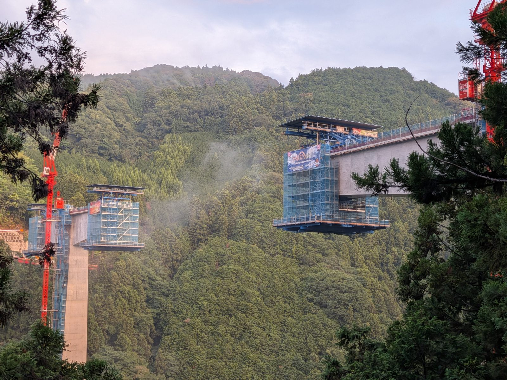

大洲の暮らし ・ 出典: 愛媛県道路建設課、愛媛県南予地方局、国土交通省、NEXCO西日本

まず要約: 四国８の字ネットワークは、四国４県を８の字にぐるりと結ぶ総延長798ｋｍの高規格道路網で、2025年４月１日時点の整備率は約77％。
調べていて驚いたのは、四国縦貫自動車道も四国横断自動車道も、どちらも終点が大洲市だったことだ。
８の字の輪が閉じる場所に大洲市がある。一方で、愛媛県内の供用中の高速道路の約55％は暫定２車線で、内子五十崎ＩＣ～大洲ＩＣ間の４車線化は平成元年に事業化されて、いまも工事中だ。
愛媛県道路建設課のページに、定義がそのまま書かれている。
「四国８の字ネットワークは、四国縦貫自動車道、四国横断自動車道、高知東部自動車道、阿南安芸自動車道で構成される全長798ｋｍの高速道路ネットワークです。四国４県を８の字で結ぶことから、『四国８の字ネットワーク』と呼ばれており、2025（R7）年４月１日現在で、約77％の整備率となっています」
国土交通省の資料では、令和７年３月末時点の開通延長を約610ｋｍ、整備率を約76％としている。約１か月の時点差なので、実質同じ数字だ。
逆に言えば、４分の１近い約190ｋｍがまだ途切れている。とくに未整備が残っているのは、高知県四万十町から愛媛県宇和島市の間と、徳島県徳島市から高知県南国市の間だ。太平洋側の、人口の少ない区間が残っている形になる。
この道路網の出発点はかなり古い。愛媛県のページによると、1987年６月26日の道路審議会の答申で、全国に14,000ｋｍの高規格幹線道路網が決定された。
同月30日の第四次全国総合開発計画（閣議決定）は、その目的を「地方生活圏・県庁所在都市・地域の発展の核となる地方都市及び周辺地域等からおおむね１時間程度で利用可能となるよう」と説明している。
「どこからでも１時間で高速道路に乗れる国」を作る、という構想の一部が四国８の字ネットワークだ。
四国で最初の高速道路が開通したのは1985年３月27日、三島川之江ＩＣ～土居ＩＣ間の約11ｋｍだった。そこから40年かかって、まだ77％である。
いちばん驚いたのがここだ。愛媛県のページは、８の字を構成する２本の背骨をこう説明している。
どちらも終点が大洲市。東西に貫く道と、S字に回る道が、大洲で合流する。
だから８の字になる。大洲市は、四国の高速道路網の「輪が閉じる場所」だったということになる。
普段まったく意識していなかったが、地図で見ると納得がいく。松山から南下してきた縦貫道と、高知・宇和島側から北上してきた横断道が、大洲でつながる。ここがつながらなければ「８の字」は成立しない。
実際の接続も、愛媛県のページに日付まで書かれていた。国道56号大洲道路が、2002年３月に東大洲（大洲ＩＣ先）で四国縦貫自動車道と、2004年４月に大洲北只（大洲北只ＩＣ先）で四国横断自動車道と接続している。
大洲道路は、２本の高速道路をつなぐ「継ぎ目」の役割を持っている。
国土交通省がこの道路網に与えている位置づけは、はっきりしている。
災害時にも確実に機能する道路ネットワークと、地域間の移動を支える生活の基盤の２つだ。
災害時の目標が具体的なのが印象的だった。発災後おおむね１日以内に緊急車両の通行を確保し、おおむね１週間以内に一般車両の通行を確保する。
そのために、南海トラフ巨大地震の津波浸水想定を避けたルート設定がなされている。
海沿いの国道が水没しても、山側の高速道路が生きていれば人と物が動く、という考え方だ。
平時の効果として国交省が挙げているのは、水産物を「鮮度を保ったまま市場へ出荷」できること、病院への移動時間が短くなり救急医療体制が充実すること、そして高等教育機関への通学圏が広がって進学の選択肢が確保されることだ。
３つ目が入っているのは、地方の道路事業らしい理由づけだと思う。
大洲市に住んでいると毎日のように使う大洲道路についても、県のページに一通り書かれていた。
「一般国道56号大洲道路（6.3ｋｍ）は、四国８の字ネットワークの一部を形成する無料の自動車専用道路として、国土交通省により整備されています」
経緯はこうだ。1991年３月に大洲冨士ＩＣ～大洲南ＩＣ間が開通し、2002年３月に四国縦貫自動車道と、2004年４月に四国横断自動車道と接続して全線開通した。
そのうち大洲ＩＣ～大洲北ＩＣ間は2006年３月までに４車線化が完了している。ただし四国縦貫・横断自動車道の接続部は暫定２車線のままだ。
高速道路と高速道路をつなぐ6.3ｋｍが、無料で、しかも一部は２車線。この構造が、大洲周辺の交通の特徴になっている。
では、開通していれば安心なのか。県のページを読むと、そうでもない。
愛媛県内で供用されている四国縦貫自動車道・四国横断自動車道は合わせて186.2ｋｍ。
内訳は、縦貫道が徳島県境から大洲ＩＣまで133.7ｋｍ、横断道が香川県境から高知県境まで20.5ｋｍと宇和島北ＩＣ～大洲北只ＩＣ間の32.0ｋｍだ。
県はこの状態の問題点も明記している。「暫定２車線区間では渋滞の発生や非常時の対応のほか、死亡率の高い事故が発生するなど交通安全面で大きな課題を有しており」。
対向車と中央分離帯なしで向き合う構造なので、正面衝突が起きる。
「つながった」ことと「安全に使える」ことは別だ、という話になる。
大洲に直接関わるのが、松山自動車道の伊予ＩＣ～大洲ＩＣ間の４車線化だ。
NEXCO西日本が公開している令和８年７月末時点の進捗を見ると、３区間に分かれている。
| 区間 | 延長 | 用地取得率 | 工事着手率 | 状況 |
|---|---|---|---|---|
| 内子五十崎ＩＣ～大洲ＩＣ | 約4.4ｋｍ | 100％ | 100％ | 工事を進めている |
| 伊予ＩＣ～内子五十崎ＩＣ | 約9.7ｋｍ | 100％ | 31％ | 測量調査・設計および工事 |
| 伊予ＩＣ～内子五十崎ＩＣ | 約5.3ｋｍ | 100％ | ０％ | 測量調査・設計を進めている |
用地取得はどの区間も100％完了している。止まっているのは工事のほうだ。
大洲にいちばん近い内子五十崎ＩＣ～大洲ＩＣ間は工事着手率100％まで来ているが、伊予ＩＣ寄りの5.3ｋｍはまだ着手率０％である。
時間軸を見て驚いた。愛媛県のページには、４車線化の事業化年度が並んでいる。
いちばん上の「H元事業化」は、平成元年（1989年）だ。令和８年のいまも工事中なので、37年たってまだ終わっていないことになる。
これは県のページの記載をそのまま読んだ結果で、途中の経緯（整備計画としての決定と、実際の工事着手のずれ）までは確認できていない。
ただ、４車線化というのは、それくらいの時間軸で動いているということは分かる。
なお、開通予定時期は公表されていない。NEXCO西日本の進捗ページにも、開通見通しの記載は見当たらなかった。
もう１つ、大洲に関わるのが大洲・八幡浜自動車道だ。八幡浜市・伊方町（八西地域）と大洲市を結び、四国８の字ネットワークに接続する地域高規格道路で、愛媛県南予地方局によると平成９年度から整備が進められている。４工区に分かれていて、進み具合はばらばらだ。
| 工区 | 状況 |
|---|---|
| 名坂道路 | 平成25年３月開通 |
| 八幡浜道路 | 令和５年３月開通 |
| 夜昼道路 | 整備中（平成25年度事業化） |
| 大洲西道路 | 整備中（平成29年度事業化） |
夜昼道路と大洲西道路の開通見通しについては、県・国のいずれのページにも記載を見つけられなかった。
ここは「調べたが分からなかった」と正直に書いておく。八幡浜側と大洲側から掘り進めて、真ん中の峠部分が最後に残る、という順番になっている。
なお、四国縦貫道と四国横断道が四国中央市付近でX字状に交わり、そこから徳島・高松・高知・松山へ向かう骨格は「エックスハイウェイ」と呼ばれる。
この名称は2000年３月の井川池田ＩＣ～川之江東ＪＣＴ間の開通のときに付けられたとされるが、この命名時期については一次資料で裏付けが取れなかったので、参考情報として書いておく。
名前だけは聞いたことがあった「四国８の字ネットワーク」だが、調べてみると、通勤で毎日通る大洲道路や松山道の区間が、四国全体を８の字に結ぶ計画の「輪が閉じる場所」だった。
整備率77％、県内の55％が暫定２車線、平成元年に事業化された４車線化がまだ工事中。
できあがった道を走っているつもりでいたが、実際にはまだ工事の途中にいる。
夜昼道路と大洲西道路がいつ開通するのか、これからは少し気にしてニュースを追ってみようと思う。